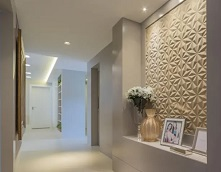
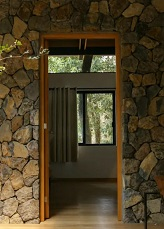
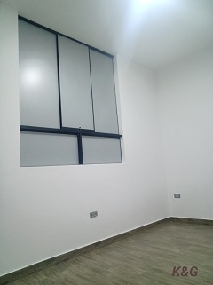

Nuestros proyectos fueron realizados con calidad y estilo.
| Remodelacion de hold, con trabajo de ceramico en paredes y piso, cambio de luminarias modernas e instalación de muebles según el requerimiento de cliente. |  |
|  | Un estilo rústico o tal vez industrial puede generarse revistiendo distintos tipos de paredes con piezas decorativas de ladrillo, también llamado ladrillo misión, que consiste en piezas delgadas de tal modo que cubren las paredes con apenas un centímetro de grosor, sin necesidad de restar espacio a la superficie. El detalle es encantador. |
| Instalacion de luminarias y ventanas para la remodelacion de interiores. Acabados sencillos que permitan brindar un ambiente amplio y limpio, con luz natural |  |